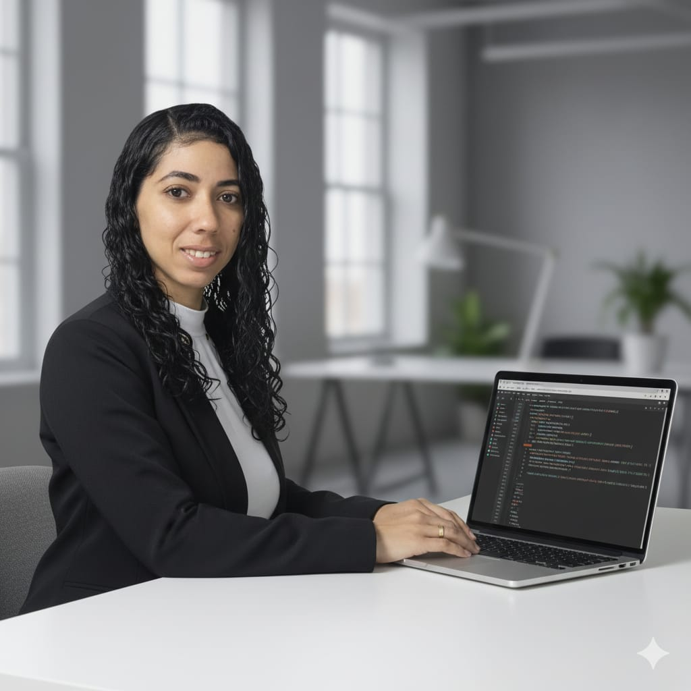

Olá, eu sou a Thaise
Desenvolvedora Front-End & Back-end
Criando experiências digitais modernas e responsivas

Sobre Mim
Profissional em Formação na Área de Tecnologia
Atualmente estou cursando o Técnico em Desenvolvimento de Sistemas e também realizando uma formação em Frontend, com foco em criar interfaces modernas, responsivas e acessíveis. Tenho facilidade em transformar ideias em soluções digitais que unem usabilidade e design.
Sou dedicada ao aprendizado contínuo e busco aplicar boas práticas e novas tecnologias para desenvolver projetos que ofereçam experiências digitais completas, eficientes e de impacto positivo.
Projetos Recentes
Meu primeiro site
Uma landing page responsiva com design moderno e animações suaves, desenvolvida com HTML, CSS e JavaScript.
Sistema Cardio
Projeto **Java Swing** desenvolvido no **NetBeans**, voltado para o registro e acompanhamento de medições de pressão arterial. O sistema foi construído com foco em acessibilidade para idosos, permitindo salvar e consultar registros de forma simples.
Vamos Conversar?
Estou aberta a oportunidades de aprendizado e projetos colaborativos!